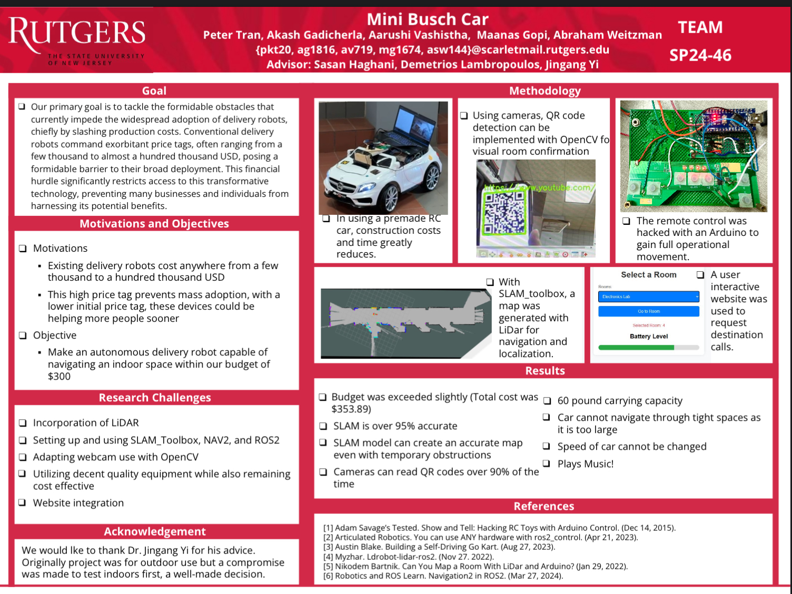
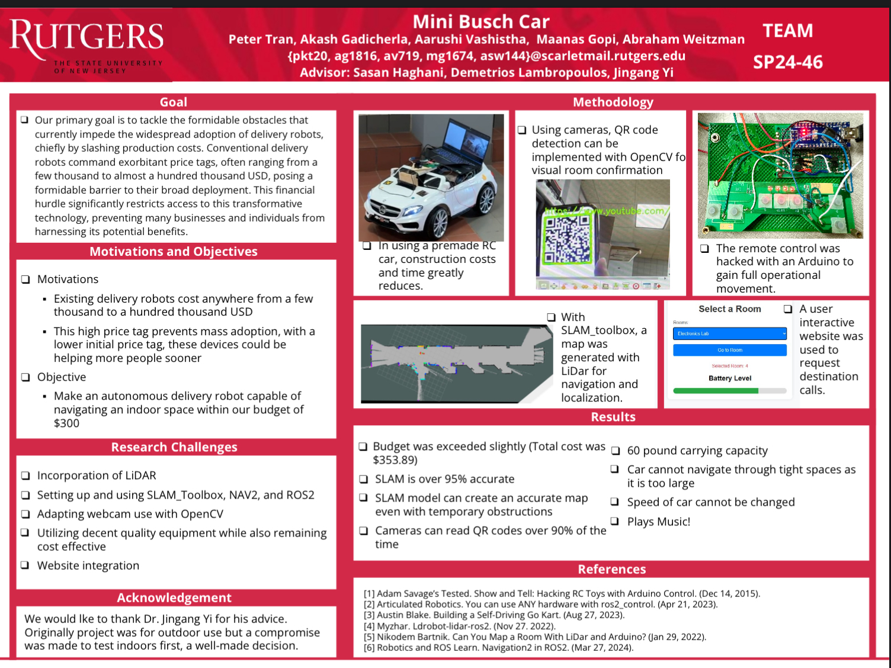

Self Driving Car
 

> This was our senior design project for Rutgers ECE. The goal was to create an affordable self-driving vehicle by placing add-ons to a pre-built vehicle. It was also to judge if the current market on autonomous navigation was fair for consumers. The robot could serve a self-delivery service that can go from any area to any room as opposed to a hard-coded route, which can be tedious/difficult to program.
> The original car was purchased off of Amazon for its low price ($100) and the ability to be remote controlled. The remote control was hacked with an Arduino nano to make it possible to communicate with the laptop. The laptop was purchased used from eBay ($75). An elevation column was made for the LiDAR ($80) to properly map the room and to sense most obstacles.
> ROS2 humble was used to control the car. Gazebo and the LiDAR were used to map and simulate the area for NAV2 to pre-plan courses.
> We were unable to accomplish all of our goals within the timeframe given. We were able to get the computer to control the car based on inputs from NAV2 with collision avoidance, however, not enough configuration was done to account for the communication delays and the momentum of the car. We had other features such as using a webcam for computer vision to recognize certain locations and obstacles that the LiDAR could not pick up. We wanted to also create goal-posts from room to room which could be selected via web-browser. If another month's time was allowed, the configurations would have been better calibrated and the aforementioned features could have been implemented.
> The project overall was a success given the allowed time for the scope of the project, and the budget of roughly $300. It allowed our team to place 15th/~45 teams